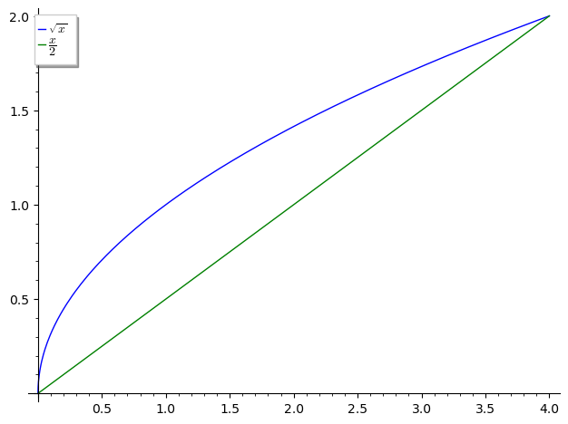
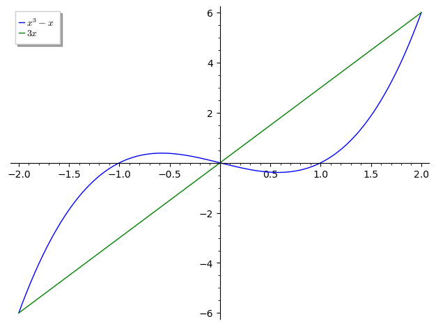
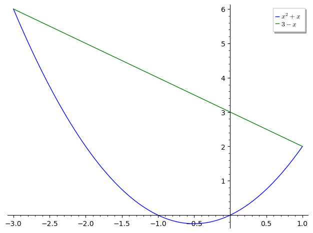
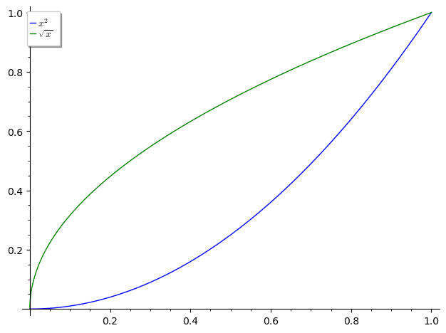
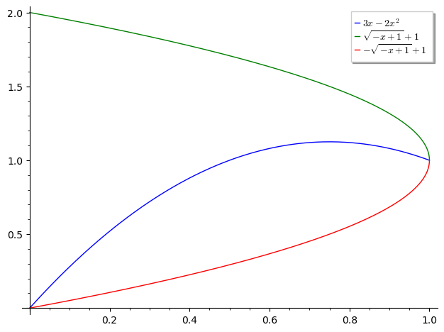

1 Area Between Curves
1.1 Solution 1
Let's plot the graph:
x = var('x') g = Graphics() g += plot(x^3 + x^2, 0, 3, legend_label = "y = x^3 + x^2") g += plot(x^3 - 1, 0, 3, legend_label = "x^3 - 1", color="green") g.show()
Let's find the area between the curves:
\(A = \int_0^3 (x^3 + x^2) - (x^3 - 1)\)
from sage.symbolic.integration.integral import definite_integral x = var('x') definite_integral(x^2 + 1, x, 0, 3)
12
1.2 Solution 2
Let's plot the graph:
x = var('x') g = Graphics() g += plot(1/(x^2),1, 2, legend_label="$\dfrac{1}{x^2}$") g += plot(1/(x^3), 1, 2, legend_label="$\dfrac{1}{x^3}$", color = "green") g.show()
Let's find the area between the curves:
\(A = \int_1^2 \dfrac{1}{x^2} - \dfrac{1}{x^3}\)
x = var('x') definite_integral(1/(x^2) - 1/(x^3), x, 1, 2)
1/8
1.3 Solution 3
Since no interval is given, let's compute the intersection point of the curves.
x = var('x') solve([x^2 == x^3], x)
[x == 0, x == 1]
g1 = x^2 g2 = x^3 [g1(0), g1(1), g2(0), g2(1)]
[0, 1, 0, 1]
So the intersection points of the equations are \((0,0)\) and \((1,1)\).
Let's plot the graph between the intersection points:
x = var('x') g = Graphics() g += plot(x^2, 0, 1, legend_label = "x^2") g += plot(x^3, 0, 1, legend_label = "x^3", color="green") g.show()

Let's find the area between the curves:
\(A = \int_0^1 x^2 - x^3\)
x = var('x') definite_integral((x^2) - (x^3), x, 0, 1)
1/12
1.4 Solution 4
Let's plot the graph:
x = var('x') g = Graphics() g += plot(1/2, pi/6, (5*pi/6), legend_label = "$\dfrac{1}{2}$") g += plot(sin(x), pi/6, (5*pi/6), legend_label = "$\sin(x)$", color="green") g.show()
Let's find the area between the curves:
\(A = \int_{\dfrac{\pi}{6}}^{\dfrac{5\pi}{6}} \sin x - (-\dfrac{1}{2})\)
definite_integral(sin(x) + (1/2), x, pi/6, 5*pi/6)
1/3*pi + sqrt(3)
1.5 Solution 5
Let's plot the graph:
x = var('x') g = Graphics() g += plot(sin(x), pi/4, (5*pi/4), legend_label = "$\sin(x)$") g += plot(cos(x), pi/4, (5*pi/4), legend_label = "$\cos(x)$", color="green") g.show()
Let's find the area between the curves:
\(A = \int_(\pi/4)^(5\pi/4) \sin x - \cos x dx\)
definite_integral(sin(x) - cos(x), x, pi/4, 5*pi/4)
2*sqrt(2)
1.6 Solution 6
The equation of y axis is \(x = 0\) Let's find the intersection points with the curve \(x = y^2 - 1\)
x,y = var('x y') solve([y^2 - 1 == 0], y)
[y == -1, y == 1]
Let's plot the graph:
x,y = var('x y') g = Graphics() g += line([(0,0), (0,1), (0,-1)], legend_label = "x = 0") g += plot(sqrt(x + 1), -1, 2, legend_label = "$\sqrt{x+1}$", color="green") g += plot(-sqrt(x + 1), -1, 2, legend_label = "$-\sqrt{x+1}$", color="green") g.show()
Let's find the area between the curves:
\(A = \int_{-1}^1 \sqrt{x+1} - (-\sqrt{x+1}) dx\)
\(= \int_{-1}^1 2\sqrt{x+1} dx\)
definite_integral(2*sqrt(x+1), x, -1, 1)
8/3*sqrt(2)
1.7 Solution 7
Since no interval is given, let's compute the intersection point of the curves.
x = var('x') solve(sqrt(x) == x/2, x, algorithm='sympy')
[x == 0, x == 4]
Let's compute the points:
g1 = x/2 [g1(0), g1(4)]
[0, 2]
So the intersection points are \((0,0)\) and \((4,2)\)
Let's plot the graph:
x,y = var('x y') g = Graphics() g += plot(sqrt(x), 0, 4, legend_label = "$\sqrt{x}$") g += plot(x/2, 0, 4, legend_label = "$\dfrac{x}{2}$", color="green") g.show()

Let's find the area between the curves:
\(A = \int_0^4 \sqrt{x} - (\dfrac{x}{2}) dx\)
\(= \int_0^4 \sqrt{x} - \dfrac{x}{2}\)
definite_integral(sqrt(x) - (x/2), x, 0, 4)
4/3
1.8 Solution 8
Since no interval is given, let's compute the intersection point of the curves.
x = var('x') solve(x^3 - x == 3*x, x)
[x == -2, x == 2, x == 0]
Let's plot the graph:
x,y = var('x y') g = Graphics() g += plot(x^3 - x, -2, 2, legend_label = "$x^3 - x$") g += plot(3*x, -2, 2, legend_label = "$3x$", color="green") g.show()

Let's find the area between the curves:
\(A = \int_{-2}^0 x^3 - x - 3x dx + \int_0^2 3x - (x^3 - x) dx\)
\(= \int_{-2}^0 x^3 - 4x dx + \int_0^2 4x - x^3 dx\)
definite_integral(x^3 - 4*x, x, -2, 0) + definite_integral(4*x - x^3, x, 0, 2)
8
1.9 Solution 9
I'm switching the \(x\) and \(y\) in the curves to simpify the problem.
x = var('x') solve(x^2 + x == 3 - x, x)
[x == -3, x == 1]
Let's plot the graph:
x = var('x') g = Graphics() g += plot(x^2 + x, -3, 1, legend_label = "$x^2 + x$") g += plot(3- x, -3, 1, legend_label = "$3-x$", color="green") g.show()

Let's find the area between the curves:
\(A = \int_{-3}^1 3 - x - (x^2 + x) dx\)
\(= \int_{-3}^1 3 - 2x - x^2 dx\)
definite_integral(3 - 2*x - x^2, x, -3, 1)
32/3
1.10 Solution 10
Since no interval is given, let's compute the intersection point of the curves.
x = var('x') solve(x == 2*x, x)
[x == 0]
Intersection between \(y=x\) and \(y = 2x\) is at \(x = 0\)
x = var('x') solve(x == 6 - x, x)
[x == 3]
Intersection between \(y=x\) and \(y = 6-x\) is at \(x = 3\)
x = var('x') solve(2*x == 6 - x, x)
[x == 2]
Intersection between \(y=2x\) and \(y = 6-x\) is at \(x = 2\)
Let's plot the graph:
x = var('x') g = Graphics() g += plot(x, 0, 3, legend_label = "$x$") g += plot(2*x, 0, 3, legend_label = "$2x$", color="red") g += plot(6 - x, 0, 3, legend_label = "$6-x$", color="green") g.show()

Let's find the area between the curves:
\(\int_0^2 2x - x dx + \int_2^3 6 - x - x dx\)
\(= \int_0^2 x dx + \int_2^3 6 - 2xdx\)
definite_integral(x, x, 0, 2) + definite_integral(6 - 2*x, x, 2, 3)
3
1.11 Solution 11
Since no interval is given, let's compute the intersection point of the curves.
solve(x^2 == sqrt(x), x, algorithm='sympy')
[[x == 0, x == 1], ConditionSet(x, Eq(-sqrt(x) + x**2, 0), FiniteSet(-1/2 - sqrt(3)*I/2, -1/2 + sqrt(3)*I/2))]
Let's plot the graph:
x = var('x') g = Graphics() g += plot(x^2, 0, 1, legend_label = "$x^2$") g += plot(sqrt(x), 0, 1, legend_label = "$\sqrt{x}$", color="green") g.show()

Let's find the area between the curves:
\(A = \int_0^1 \sqrt{x} - x^2 dx\)
from sage.symbolic.integration.integral import definite_integral definite_integral(sqrt(x) - (x^2), x, 0, 1)
1/3
1.12 Solution 12
Since no interval is given, let's compute the intersection point of the curves.
x = var('x') solve(x == 2*(3*x - 2*(x^2)) - (3*x - (2*x^2))^2, x)
[x == (-1/2*I + 1), x == (1/2*I + 1), x == 1, x == 0]
Before plotting the graph, we need to understand the curve \(x = 2y - y^2\).
x,y = var('x y') solve(x == 2*y - y^2, y)
[y == -sqrt(-x + 1) + 1, y == sqrt(-x + 1) + 1]
Let's plot the graph:
x = var('x') g = Graphics() g += plot(3*x - 2*(x^2), 0, 1, legend_label = "$3x - 2x^2$") g += plot(sqrt(-x + 1) + 1, 0, 1, legend_label = "$\sqrt{-x + 1} + 1$", color="green") g += plot(-sqrt(-x + 1) + 1, 0, 1, legend_label = "$-\sqrt{-x + 1} + 1$", color="red") g.show()

Let's find the area between the curves:
\(A = \int_0^1 3x-2x^2 - (-\sqrt{-x + 1} + 1) dx\)
\(= \int_0^1 3x-2x^2 + \sqrt{-x + 1} - 1 dx\)
definite_integral(3*x - (2*x^2) + sqrt(-x + 1) - 1, x, 0, 1)
1/2
1.13 Solution 13
We have to find three pieces of area.
For the first piece of area:
\(= \int_0^1 \sqrt{x} - (-\sqrt{x}) dx\)
Computing it:
a = definite_integral(2*sqrt(x), x, 0, 1) a
4/3
For the second piece of area:
\(= \int_1^2 \sqrt{x} - (x-2) dx\)
Computing it:
b = definite_integral(sqrt(x) - x + 2, x, 1, 2) b
4/3*sqrt(2) - 1/6
For the third piece of area:
\(= \int_2^4 \sqrt{x} - (x-2) dx\)
Computing it:
c = definite_integral(sqrt(x) - x + 2, x, 2, 4) c
-4/3*sqrt(2) + 10/3
Summing all of them will give us the result:
a + b + c
9/2
1.14 Solution 14
Suppose \(f\) is continous on \([a,b]\) and \(f(x) \geq 0, \forall x \in [a,b]\)
Let \(R\) denote the region under the graph of \(f\)
Let \(A\) be the area of \(R\).
We divide the interval \([a,b]\) into \(n\) pieces of width \(\dfrac{b-a}{n}\) with division points \(x_i = a + i\Delta x\)
1.14.1 Solution a
Each interval is composed of smaller intervals \([x_0, x_1],[x_1,x_2]...[x_{n-1}, x_n]\) each of width \(\Delta x\)
And for each of the sample point \(x_i^{*}\), it dimensions are \(f(x_i^{*})\) and \(\Delta x\).
Now we know from Riemann Sum that
\(f(x^{*}_1)\Delta x + f(x^{*}_2)\Delta x + ... + f(x^{*}_n)\Delta x = \sum_{i=1}^nf(x^{*}_i)\Delta x\)
So, \(f(x_i^{*})\Delta x \leq \sum_{i=1}^nf(x^{*}_i)\Delta x\)
\(f(x_i^{*})\Delta x \leq \sum_{i=1}^nf(x^{*}_i)\Delta x \leq A\)
\(m_n \leq A\)